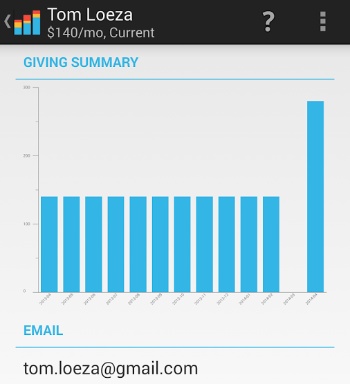
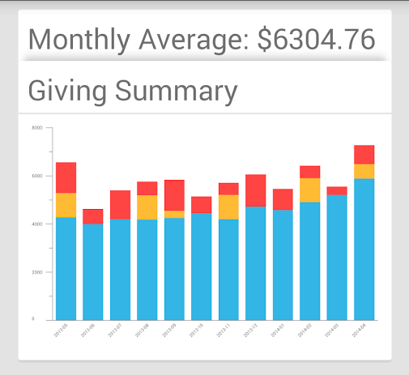

Keep on top of your support base, effortlessly
- Set it and forget it. Just set up OpenMPD by logging in to your organisation's data server and let the app do the rest.
- Get timely notifications. When a partner changes, drops, or makes a special gift, OpenMPD notifies you.
- Respond and move on. With a quick tap you can call or email to thank them, or follow up about an expired credit card. Once you're done with a notification, swipe it away.
- Stop worrying. With OpenMPD on your team, you'll never again find out a partner stopped giving, six months later.
No more data management
- Automatic. OpenMPD downloads your donor data every few days, so it's always up to date.
- Intelligent. You don't need to classify your donors as monthly, quarterly, or occasional. OpenMPD figures it out based on their past giving.
- Informative. Our goal is to give you the best picture possible of what's happening with your support base, in real time.
- Mobile. Always have your latest donor data right in your pocket.

Data mine your donor history
- Visual Trends. Summary graphs show month to month trends, displaying monthly (blue), repeating (orange), and one-time (red) gifts.
- Quick Analytics. OpenMPD summarises your current monthly and recurring giving, so you know exactly what is coming in each month. It also calculates lapsed giving, so you can keep on top of your support goal.
- Dive deeper. Sort your donor list by dropped donors, occasional donors, and current donors, so you can target your asks for special gifts, increases, and restarts.
